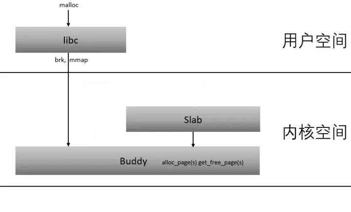
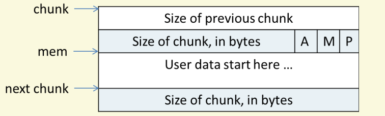

前言
这周终于抽时间把内存知识重新梳理一下，记录如下。本文是一篇概论性文章，主要目的在于帮助形成正确的结构以及层次，不会有非常具体的讨论，但每个算法具体的一些细节和比较会在引用中给出。
我对内存的认识，现在主要几部分，第一部分 计算机组成原理中虚拟内存、swap、内存映射。这一步是内存的基础，其核心所涉及的cache理念、中间层，也是我们的系统设计最宝贵的财富，值得我们细细品味，灵活运用；第二部分是linux内存管理。大型项目，例如STL库，Python等语言设计为了实现高效率，都会在系统之上再设计一层内存管理，但我认为linux的内存管理应当是最普适，给我们帮助最多的，也是我们接触最多的；第三部分是：内存的使用以及度量。包括一些系统api对内存如何影响和使用，linux内存的查看，这些是实践中我们经常遇到的问题，有助于解决一些线上问题。
主要概念、算法
我们知道linux是由内核态和用户态之分的，两种模式的存在，天然的分离了用户和系统的一些操作，保证了系统的安全可靠。所以从内存管理里来说，内核态和用户态的内存管理是不同的。linux内存管理主要有：用户态的内存管理，主要包括glibc的ptmalloc、google的tcmalloc等；linux内核态的小对象的slab分配器算法；linux伙伴算法。其三者的关系见下图：
用户态的分配算法
这里我们大概讲一下glibc的ptmalloc实现，该实现是系统默认的实现，是大家打交道比较多的。其涉及到的主要概念是chunk， bins。
chunk
在Glibc的堆内存管理中，chunk是堆内存分配的基本的单位，它表示堆内存中连续的内存单元。比方说我们通过malloc(8)申请一个连续的8字节内存，则Glibc会分配我们一个大小为8(chunk size + previous size)+8(payload)大小的chunk，这也就解释了free(void*)一块内存，只需要给出一个地址，因为可以根据结构找到大小以及相邻信息，从而完成释放的过程。，其结构如下：
bins
将相似大小的chunk用双向链表链接起来，这样的一个链表就被叫做bin。ptmalloc一共维护了128个bin。bins的目的就在于分配的时候能快速索引，根据规则找到合适的chunk。同时为了快速分配、回收小内存，专门设置了Fast Bins，（小内存Cache很关键，因为是高频的使用和释放的）；为了整理分配过内存，避免过多小内存碎片，设置了unsorted bin，专门接受要释放的合适大小的chunk，整理后再放回普通bin中。
分配算法的简单流程可以看作是先计算chunk大小，根据规则寻找bin,如果不符合向系统申请，释放简单来看就是一个寻找bin的反过程。实际上chunk的组织方式，分配、释放都是包含着具体的trick和一些设计哲学的，关于具体的实现和较为详细流程可以参照这几篇文章:关于Ptmalloc的一点总结， ptmalloc堆内存管理。如果感兴趣，也可以去读一下Ptmalloc2 源代码分析.华庭
ptmalloc虽然取得了效率与空间的平衡，但是在空间利用率、效率、多线程表现等方面还是可以更好的。下面几篇文章介绍了ptmalloc、tcmalloc、jemalloc，并进行了一些比较。几种malloc实现原理, ptmalloc/tcmalloc/jemalloc内存分配策略。
内核态的slab分配器
在linux内核中， 像用户程序一样，内核也需要动态分配内存，由于内核无法借助标准的C库，linux内核实现的是slab分配器。相比于用户态的内存分配，内核的内存分配，变量种类和结构相对已知，所以可以在chunk粒度基础上做一些优化。slab 是 slab 分配器进行操作的最小分配单位，一个slab来自物理内存管理器的一到多个物理页，该slab被划分成一个个对象，这些对象是从特定缓存中进行分配和释放的基本元素。多个slab被连接为一个队列，通常为了使用方便，需要三个队列，即使用完的队列、部分使用的队列，未使用的队列。三个队列就构成了一个对象池，而内核就是维护了一个对象池（kmem_cache）的链表。基本结构见下图：
与传统的内存管理模式相比， slab 缓存分配器提供了很多优点。首先，内核通常依赖于对小对象的分配，它们会在系统生命周期内进行无数次分配。slab 缓存分配器通过对类似大小的对象进行缓存而提供这种功能，从而避免了常见的碎片问题。slab 分配器还支持通用对象的初始化，从而避免了为同一目而对一个对象重复进行初始化。最后，slab 分配器还可以支持硬件缓存对齐和着色，这允许不同缓存中的对象占用相同的缓存行，从而提高缓存的利用率并获得更好的性能。
下面文章给了一些更详细的描述，Linux slab 分配器剖析, slab分配器。
伙伴算法
无论是用户态分配算法还是内核态分配算法，应该是在虚拟地址空间进行分配，实际上真正分配物理内存是通过缺页中断引起。随着用户程序的执行和结束，就需要不断地为其分配和释放物理页面。内核应该为分配一组连续的页面而建立一种稳定、高效的分配策略。但是，频繁地请求和释放不同大小的一组连续页面，必然导致在已分配的内存块中分散许多小块的空闲页面，即外碎片，由此带来的问题是，即使这些小块的空闲页面加起来足以满足所请求的页面，但是要分配一个大块的连续页面可能就根本无法满足。为此，Linux采用著名的伙伴（Buddy）算法来解决外碎片问题。
伙伴算法比较简单，即将内存按2的幂进行划分，相当于分离出若干个块大小一致的空闲链表，搜索该链表并给出同需求最佳匹配的大小。至于具体介绍可以看一下好友内存分配, 至于简单版实现，可以参照云风，伙伴内存分配器。

{kind=link}